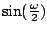
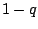
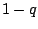
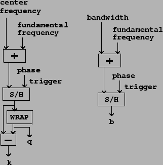
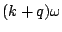
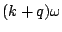

Combining the two-cosine carrier signal with the waveshaping pulse generator
gives the
phase-aligned formant
generator, usually called by its acronym, PAF. (The PAF is the subject of a
1994 patent owned by IRCAM.) The combined formula is,
![\begin{displaymath}
x[n] = {
{\underbrace
{g \left ( a \sin (\omega n/2) \ri...
...) + q \cos( (k+1) \omega n)}
\right ] } _\mathrm{carrier}}
}
\end{displaymath}](img598.png)
Figure 6.8 shows
the PAF as a block diagram, separated into a phase
generation step, a carrier, and a modulator. The phase generation step
outputs a sawtooth signal at the fundamental frequency.
The modulator is done by standard waveshaping, with a slight twist added.
The formula for the modulator signals in the PAF call for an incoming
sinusoid at half the fundamental frequency, i.e.,
,
and this nominally would require us to use a phasor tuned to half the
fundamental frequency. However, since the waveshaping function is even,
we may substitute the absolute value of the sinusoid:
Although the wavetable function is pictured over both negative and positive
values (reaching from -10 to 10), in fact we're only using the positive
side for lookup, ranging from 0 to  , the index of modulation.
If the index of modulation exceeds the input range of the table (here set
to stop at 10 as an example), the table lookup address should be
clipped. The table should extend far enough into the tail of the waveshaping
function so that the effect of clipping is inaudible.
, the index of modulation.
If the index of modulation exceeds the input range of the table (here set
to stop at 10 as an example), the table lookup address should be
clipped. The table should extend far enough into the tail of the waveshaping
function so that the effect of clipping is inaudible.
The carrier signal is a weighted sum of two cosines, whose frequencies are
increased by multiplication (by  and
and  , respectively) and wrapping. In
this way all the lookup
phases are controlled by the same sawtooth oscillator.
, respectively) and wrapping. In
this way all the lookup
phases are controlled by the same sawtooth oscillator.
The quantities  ,
,  , and the wavetable index
, and the wavetable index  are calculated as shown in Figure 6.9. They are
functions of the specified fundamental frequency, the formant center frequency,
and the bandwidth, which are the original parameters of the algorithm. The
quantity
are calculated as shown in Figure 6.9. They are
functions of the specified fundamental frequency, the formant center frequency,
and the bandwidth, which are the original parameters of the algorithm. The
quantity  , not shown in the figure, is just .
, not shown in the figure, is just .
|  |
As described in the previous section, the quantities  ,
,  , and
, and  should
only change at phase wraparound points, that is to say, at periods of
should
only change at phase wraparound points, that is to say, at periods of
 . Since the calculation of
. Since the calculation of  , etc., depends on the value
of the parameter
, etc., depends on the value
of the parameter  , it follows that
, it follows that  itself should only be
updated
when the phase is a multiple of
itself should only be
updated
when the phase is a multiple of  ; otherwise, a change in
; otherwise, a change in  could
send the center frequency  to an incorrect value for a
(very audible)
fraction of a period. In effect, all the parameter calculations should be
synchronized to the phase of the original oscillator.
could
send the center frequency  to an incorrect value for a
(very audible)
fraction of a period. In effect, all the parameter calculations should be
synchronized to the phase of the original oscillator.
Having the oscillator's phase control the updating of its own frequency is an example of feedback, which in general means using any process's output as one of its inputs. When processing digital audio signals at a fixed sample rate (as we're doing), it is never possible to have the process's current output as an input, since at the time we would need it we haven't yet calculated it. The best we can hope for is to use the previous sample of output--in effect, adding one sample of delay. In block environments (such as Max, Pd, and Csound) the situation becomes more complicated, but we will delay discussing that until the next chapter (and simply wish away the problem in the examples at the end of this one).
The amplitude of the central peak in the spectrum of the PAF generator is
roughly  ; in other words, close to unity when the index
; in other words, close to unity when the index  is
smaller than one, and falling off inversely with larger values of
is
smaller than one, and falling off inversely with larger values of  .
For values of
.
For values of  less than about ten, the loudness of the output does
not vary greatly, since the introduction of other partials, even at lower
amplitudes, offsets the decrease of the center partial's amplitude. However,
if using the PAF to generate formants with specified peak amplitudes, the
output should be multiplied by
less than about ten, the loudness of the output does
not vary greatly, since the introduction of other partials, even at lower
amplitudes, offsets the decrease of the center partial's amplitude. However,
if using the PAF to generate formants with specified peak amplitudes, the
output should be multiplied by  (or even, if necessary, a better
approximation of the correction factor, whose exact value depends on the
waveshaping function).
This amplitude correction should be ramped, not
sampled-and-held.
(or even, if necessary, a better
approximation of the correction factor, whose exact value depends on the
waveshaping function).
This amplitude correction should be ramped, not
sampled-and-held.
Since the expansion of the waveshaping (modulator) signal consists of all cosine terms (i.e., since they all have initial phase zero), as do the two components of the carrier, it follows from the cosine product formula that the components of the result are all cosines as well. This means that any number of PAF generators, if they are made to share the same oscillator for phase generation, will all be in phase and combining them gives the sum of the individual spectra. So we can make a multiple-formant version as shown in Figure 6.10.
Figure 6.12 shows a possible output of a pair of formants generated this way; the first formant is centered halfway between partials 3 and 4, and the second at partial 12, with lower amplitude and bandwidth. The Cauchy waveshaping function was used, which makes linearly sloped spectra (viewed in dB). The two superpose additively, so that the spectral envelope curves smoothly from one formant to the other. The lower formant also adds to its own reflection about the vertical axis, so that it appears slightly curved upward there.
The PAF generator can be altered if desired to make inharmonic spectra by sliding the partials upward or downward in frequency. To do this, add a second oscillator to the phase of both carrier cosines, but not to the phase of the modulation portion of the diagram, nor to the controlling phase of the sample-and-hold units. It turns out that the sample-and-hold strategy for smooth parameter updates still works; and furthermore, multiple PAF generators sharing the same phase generation portion will still be in phase with each other.
This technique for superposing spectra does not work as predictably for phase modulation as it does for the PAF generator; the partials of the phase modulation output have complicated phase relationships and they seem difficult to combine coherently. In general, phase modulation will give more complicated patterns of spectral evolution, whereas the PAF is easier to predict and turn to specific desired effects.